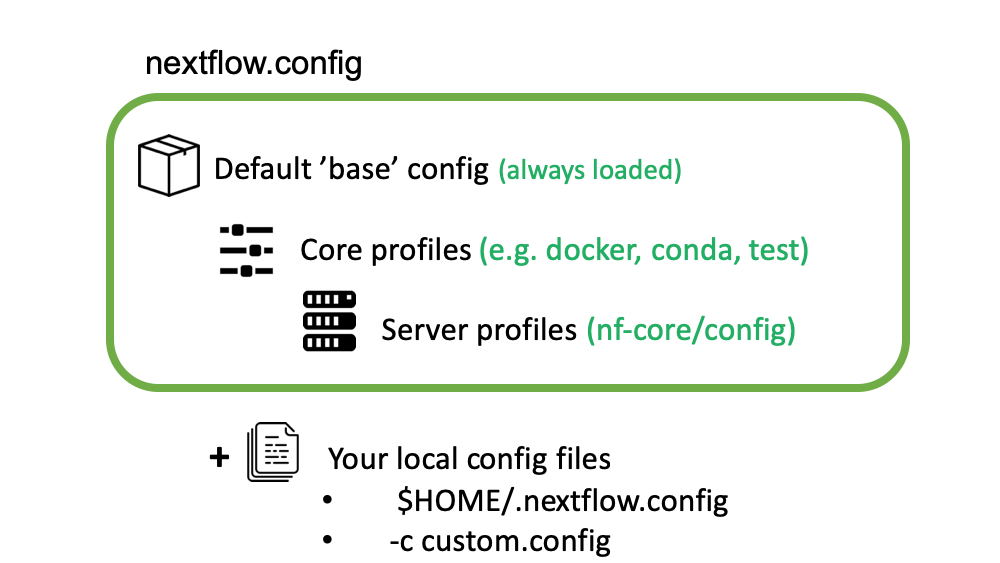

8.2 nf-core pipelines
Teaching: 45 min || Exercises: 15 min
Overview
8.1 What is nf-core?
nf-core is a community-led project to develop a set of best-practice pipelines built using Nextflow workflow management system. Pipelines are governed by a set of guidelines, enforced by community code reviews and automatic code testing.
8.2 What are nf-core pipelines?
nf-core pipelines are an organised collection of Nextflow scripts, other non-nextflow scripts (written in any language), configuration files, software specifications, and documentation hosted on GitHub. There is generally a single pipeline for a given data and analysis type e.g. There is a single pipeline for bulk RNA-Seq. All nf-core pipelines are distributed under the, permissive free software, MIT licences.
8.3 Running nf-core pipelines
Software requirements for nf-core pipelines
nf-core pipeline software dependencies are specified using either Docker, Singularity or Conda. It is Nextflow that handles the downloading of containers and creation of conda environments. In theory it is possible to run the pipelines with software installed by other methods (e.g. environment modules, or manual installation), but this is not recommended.
Fetching pipeline code
Unless you are actively developing pipeline code, you should use Nextflow’s built-in functionality to fetch nf-core pipelines. You can use the following command to pull the latest version of a remote workflow from the nf-core github site.;
nextflow pull nf-core/<PIPELINE>Nextflow will also automatically fetch the pipeline code when you run
`bash nextflow run nf-core/<pipeline>.
For the best reproducibility, it is good to explicitly reference the pipeline version number that you wish to use with the `-revision`/`-r` flag.
In the example below we are pulling the rnaseq pipeline version 3.0
```bash
$ nextflow pull nf-core/rnaseq -revision 3.08.4 Usage instructions and documentation
You can find general documentation and instructions for Nextflow and nf-core on the nf-core website . Pipeline-specific documentation is bundled with each pipeline in the /docs folder. This can be read either locally, on GitHub, or on the nf-core website.
Each pipeline has its own webpage e.g. nf-co.re/rnaseq.
In addition to this documentation, each pipeline comes with basic command line reference. This can be seen by running the pipeline with the parameter --help , for example:
nextflow run -r 3.4 nf-core/rnaseq --helpN E X T F L O W ~ version 20.10.0
Launching `nf-core/rnaseq` [silly_miescher] - revision: 964425e3fd [3.4]
------------------------------------------------------
,--./,-.
___ __ __ __ ___ /,-._.--~'
|\ | |__ __ / ` / \ |__) |__ } {
| \| | \__, \__/ | \ |___ \`-._,-`-,
`._,._,'
nf-core/rnaseq v3.0
------------------------------------------------------
Typical pipeline command:
nextflow run nf-core/rnaseq --input samplesheet.csv --genome GRCh37 -profile docker
Input/output options
--input [string] Path to comma-separated file containing information about the samples in the experiment.
--outdir [string] Path to the output directory where the results will be saved.
--public_data_ids [string] File containing SRA/ENA/GEO identifiers one per line in order to download their associated FastQ files.
--email [string] Email address for completion summary.
--multiqc_title [string] MultiQC report title. Printed as page header, used for filename if not otherwise specified.
--skip_sra_fastq_download [boolean] Only download metadata for public data database ids and don't download the FastQ files.
--save_merged_fastq [boolean] Save FastQ files after merging re-sequenced libraries in the results directory.
..truncated..The nf-core launch command
As can be seen from the output of the help option nf-core pipelines have a number of flags that need to be passed on the command line: some mandatory, some optional.
To make it easier to launch pipelines, these parameters are described in a JSON file, nextflow_schema.json bundled with the pipeline.
The nf-core launch command uses this to build an interactive command-line wizard which walks through the different options with descriptions of each, showing the default value and prompting for values.
Once all prompts have been answered, non-default values are saved to a params.json file which can be supplied to Nextflow using the -params-file option. Optionally, the Nextflow command can be launched there and then.
To use the launch feature, just specify the pipeline name:
nf-core launch -r 3.0 rnaseqConfig files
nf-core pipelines make use of Nextflow’s configuration files to specify how the pipelines runs, define custom parameters and what software management system to use e.g. docker, singularity or conda.
Nextflow can load pipeline configurations from multiple locations. nf-core pipelines load configuration in the following order:

- Pipeline: Default ‘base’ config
- Always loaded. Contains pipeline-specific parameters and “sensible defaults” for things like computational requirements
- Does not specify any method for software packaging. If nothing else is specified, Nextflow will expect all software to be available on the command line.
- Core config profiles
- All nf-core pipelines come with some generic config profiles. The most commonly used ones are for software packaging: docker, singularity and conda
- Other core profiles are debug and two test profiles. There two test profile, a small test profile (nf-core/test-datasets) for quick test and a full test profile which provides the path to full sized data from public repositories.
- Server profiles
- At run time, nf-core pipelines fetch configuration profiles from the configs remote repository. The profiles here are specific to clusters at different institutions.
- Because this is loaded at run time, anyone can add a profile here for their system and it will be immediately available for all nf-core pipelines.
- Local config files given to Nextflow with the
-cflag
nextflow run nf-core/rnaseq -r 3.0 -c mylocal.config- Command line configuration: pipeline parameters can be passed on the command line using the
--<parameter>syntax.
nextflow run nf-core/rnaseq -r 3.0 --email "my@email.com"`Config Profiles
nf-core makes use of Nextflow configuration profiles to make it easy to apply a group of options on the command line.
Configuration files can contain the definition of one or more profiles. A profile is a set of configuration attributes that can be activated/chosen when launching a pipeline execution by using the -profile command line option. Common profiles are conda, singularity and docker that specify which software manager to use.
Multiple profiles are comma-separated. When there are differing configuration settings provided by different profiles, the right-most profile takes priority.
nextflow run nf-core/rnaseq -r 3.0 -profile test,conda
nextflow run nf-core/rnaseq -r 3.0 -profile <institutional_config_profile>, test, condaNote The order in which config profiles are specified matters. Their priority increases from left to right.
Multiple Nextflow configuration locations
Be clever with multiple Nextflow configuration locations. For example, use -profile for your cluster configuration, the file $HOME/.nextflow/config for your personal config such as params.email and a working directory >nextflow.config file for reproducible run-specific configuration.
Running pipelines with test data
The nf-core config profile test is special profile, which defines a minimal data set and configuration, that runs quickly and tests the workflow from beginning to end. Since the data is minimal, the output is often nonsense. Real world example output are instead linked on the nf-core pipeline web page, where the workflow has been run with a full size data set:
$ nextflow run nf-core/<pipeline_name-profile testNote that you will typically still need to combine this with a software configuration profile for your system - e.g. -profile test,conda. Running with the test profile is a great way to confirm that you have Nextflow configured properly for your system before attempting to run with real data
8.5 Using nf-core pipelines offline
Many of the techniques and resources described above require an active internet connection at run time - pipeline files, configuration profiles and software containers are all dynamically fetched when the pipeline is launched. This can be a problem for people using secure computing resources that do not have connections to the internet.
To help with this, the nf-core download command automates the fetching of required files for running nf-core pipelines offline. The command can download a specific release of a pipeline with -r/--release .
By default, the pipeline will download the pipeline code and the institutional nf-core/configs files.
If you specify the flag --singularity, it will also download any singularity image files that are required (this needs Singularity to be installed). All files are saved to a single directory, ready to be transferred to the cluster where the pipeline will be executed.
$ nf-core download nf-core/rnaseq -r 3.4
,--./,-.
___ __ __ __ ___ /,-._.--~\
|\ | |__ __ / ` / \ |__) |__ } {
| \| | \__, \__/ | \ |___ \`-._,-`-,
`._,._,'
nf-core/tools version 2.1
INFO Saving nf-core/rnaseq download.py:148
Pipeline release: '3.4'
Pull singularity containers: 'No'
Output file: 'nf-core-rnaseq-3.4.tar.gz'
INFO Downloading workflow files from GitHub download.py:151
INFO Downloading centralised configs from GitHub download.py:155
INFO Compressing download.. download.py:166
INFO Command to extract files: tar -xzf nf-core-rnaseq-3.4.tar.gz download.py:653
INFO MD5 checksum for nf-core-rnaseq-3.4.tar.gz: f0e0c239bdb39c613d6a080f1dee88e98.6 Troubleshooting
If you run into issues running your pipeline you can you the nf-core website to troubleshoot common mistakes and issues https://nf-co.re/usage/troubleshooting .
Extra resources and getting help
If you still have an issue with running the pipeline then feel free to contact the nf-core community via the Slack channel . The nf-core Slack organisation has channels dedicated for each pipeline, as well as specific topics (eg. #help, #pipelines, #tools, #configs and much more). The nf-core Slack can be found at https://nfcore.slack.com (NB: no hyphen in nfcore!). To join you will need an invite, which you can get at https://nf-co.re/join/slack.
You can also get help by opening an issue in the respective pipeline repository on GitHub asking for help.
If you have problems that are directly related to Nextflow and not our pipelines or the nf-core framework tools then check out the Nextflow gitter channel or the google group.
8.7 Referencing a Pipeline
Publications
If you use an nf-core pipeline in your work you should cite the main publication for the main nf-core paper, describing the community and framework, as follows:
The nf-core framework for community-curated bioinformatics pipelines. Philip Ewels, Alexander Peltzer, Sven Fillinger, Harshil Patel, Johannes Alneberg, Andreas Wilm, Maxime Ulysse Garcia, Paolo Di Tommaso & Sven Nahnsen. Nat Biotechnol. 2020 Feb 13. doi: 10.1038/s41587-020-0439-x. ReadCube: Full Access Link
Many of the pipelines have a publication listed on the nf-core website that can be found here.
DOIs
In addition, each release of an nf-core pipeline has a digital object identifiers (DOIs) for easy referencing in literature The DOIs are generated by Zenodo from the pipeline’s github repository.
Credit
Information on this page has been adapted and modified from the following source(s):
- Graeme R. Grimes, Evan Floden, Paolo Di Tommaso, Phil Ewels and Maxime Garcia. Introduction to Workflows with Nextflow and nf-core. https://github.com/carpentries-incubator/workflows-nextflow 2021.